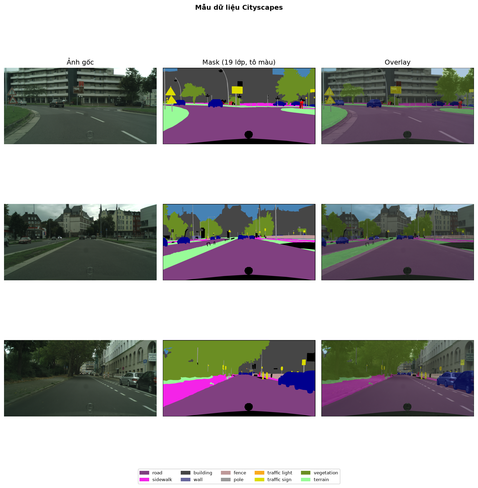
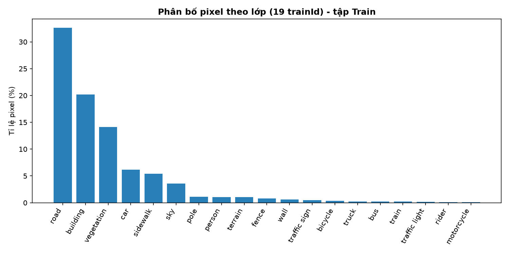
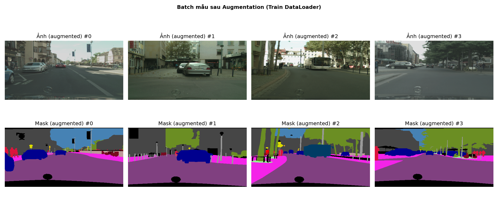
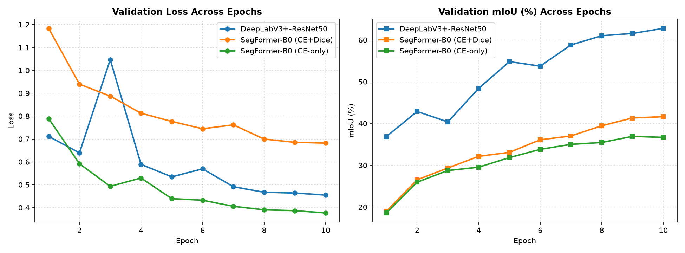
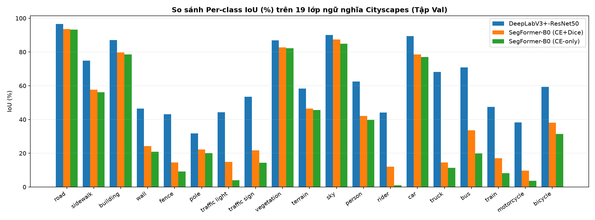
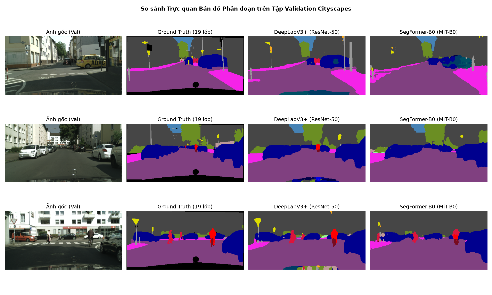

Nhóm: AutoVision | Sinh viên: Nguyễn Trần Phước (MSSV: 2470576)
Chủ đề thực hiện: Chủ đề 1 — Phân đoạn ảnh ngữ nghĩa cảnh đường giao thông hỗ trợ lái xe tự động
Trong hệ thống hỗ trợ lái xe tiên tiến (ADAS) và xe tự hành, việc hiểu cảnh đường giao thông tới mức độ từng điểm ảnh đóng vai trò cốt lõi để xác định vùng mặt đường có thể di chuyển, vỉa hè, phương tiện, người đi bộ và hệ thống biển báo/đèn tín hiệu. Đề tài này xây dựng pipeline phân đoạn ngữ nghĩa đầu-cuối trên tập dữ liệu chuẩn công nghiệp Cityscapes (5,000 ảnh, 19 lớp) và phân tích chuyên sâu kiến trúc SegFormer (NeurIPS 2021) đối sánh với nhánh mạng tích chập đa tỷ lệ DeepLabV3+ (ResNet-50).
Tập dữ liệu: Cityscapes Dataset — thu thập từ camera hành trình gắn trên ô tô tại 50 thành phố châu Âu.
1024 × 2048 được gán nhãn pixel chi tiết:
road, sidewalk), Construction (building, wall, fence), Object (pole, traffic light, traffic sign), Nature (vegetation, terrain), Sky (sky), Human (person, rider), và Vehicle (car, truck, bus, train, motorcycle, bicycle), cùng nhãn ignore_index = 255.

road 32.64%, building 20.21%, vegetation 14.10%) chiếm tới hơn 66% tổng số pixel, trong khi các lớp quan trọng về an toàn giao thông như traffic sign (0.49%), traffic light (0.18%), rider (0.12%), motorcycle (0.09%) chỉ chiếm dưới 0.5% diện tích ảnh. Điều này ảnh hưởng trực tiếp tới lựa chọn hàm mất mát ở Mục 4 (cần kết hợp Cross-Entropy + Dice Loss để tránh việc mô hình chỉ học tốt các lớp phổ biến).
trainId chuẩn (từ 0 đến 18) bằng bảng tra cứu LABEL_LUT, các lớp nền phụ và vùng biên gán về ignore_index = 255.seed = 42):
RandomResizedCrop / Resize về kích thước 256 × 512 (giữ nguyên tỷ lệ khung hình 1:2 của camera ô tô; nội suy Bilinear cho ảnh RGB và Nearest-Neighbor cho mặt nạ phân đoạn).RandomHorizontalFlip(p=0.5) và ColorJitter (thay đổi độ sáng, tương phản để mô phỏng biến thiên ánh sáng ngoài trời).mean=[0.485, 0.456, 0.406], std=[0.229, 0.224, 0.225].
Trích dẫn:
Enze Xie, Wenhai Wang, Zhiding Yu, Anima Anandkumar, Jose M. Alvarez, and Ping Luo, "SegFormer: Simple and Efficient Design for Semantic Segmentation with Transformers", in Advances in Neural Information Processing Systems (NeurIPS), vol. 34, pp. 12077–12090, 2021.
Liên kết: arXiv:2105.15203 | GitHub (NVlabs/SegFormer)
1/4, 1/8, 1/16, 1/32) thông qua ghép patch chồng lấp; nén chiều chuỗi khóa K và giá trị V qua cơ chế tự chú ý hiệu quả (giảm chi phí từ O(N²) xuống O(N²/R) với R ∈ {8, 4, 2, 1}); đồng thời tích hợp tích chập tách chiều 3×3 vào khối Mix-FFN để loại bỏ hoàn toàn mã hóa vị trí cố định. Phần giải mã All-MLP chỉ dùng các phép chiếu tuyến tính để hợp nhất đặc trưng đa tầng ở kích thước H/4 × W/4, giúp biến thể SegFormer-B0 chỉ nặng 3.72M tham số.1024 × 1024), SegFormer-B0 đạt 76.2% mIoU và SegFormer-B5 đạt 84.0% mIoU trên Cityscapes, đồng thời chống chịu rất tốt trước nhiễu thời tiết trên bộ Cityscapes-C.H/4 × W/4 rồi phóng đại 4 lần bằng nội suy song tuyến tính nên dễ làm trơn biên của các vật thể cực mảnh (cột đèn pole, đèn tín hiệu traffic light); (ii) Chỉ sử dụng hàm mất mát Cross-Entropy thuần túy nên hội tụ chậm trên các lớp diện tích nhỏ (< 0.5%) khi huấn luyện ngắn; (iii) Đòi hỏi trọng số tiền huấn luyện lớn và lịch huấn luyện dài để các khối tự chú ý hội tụ tối ưu.256 × 512, đối sánh trực tiếp SegFormer-B0 (3.72M tham số) với DeepLabV3+ ResNet-50 (42.00M tham số) và mở rộng nghiên cứu kết hợp hàm mất mát CE + 0.5×Dice để khắc phục hạn chế mất cân bằng lớp của bài báo gốc.Nhóm triển khai và huấn luyện 3 cấu hình thực nghiệm trong 10 epochs (batch_size = 8, AdamW, CosineAnnealingLR, seed = 42) để đối sánh giữa hai họ kiến trúc CNN và Transformer cùng khảo sát vai trò của hàm mất mát:
| Cấu hình | Kiến trúc Mô hình | Backbone | Hàm mất mát | Mục tiêu đối sánh |
|---|---|---|---|---|
| Mô hình 1 | DeepLabV3+ | ResNet-50 (CNN) | CE + Dice | Đại diện nhánh CNN tích chập đa tỷ lệ (ASPP) |
| Mô hình 2 | SegFormer-B0 | MiT-B0 (Transformer) | CE + Dice | Đánh giá hiệu năng & tốc độ của Transformer |
| Mô hình 2a | SegFormer-B0 | MiT-B0 (Transformer) | CE thuần | Đánh giá tác động của Dice Loss lên các lớp nhỏ |
5.1. Bảng tổng hợp kết quả định lượng trên tập Validation Cityscapes (500 ảnh, 19 lớp):
| Mô hình | Backbone | Hàm mất mát | Tham số (M) | mIoU (%) | mDice (%) | Pixel Acc (%) | FPS | Thời gian (s) |
|---|---|---|---|---|---|---|---|---|
| DeepLabV3+-ResNet50 | ResNet-50 (CNN) | CE + Dice | 42.00 | 62.77 | 75.36 | 92.79 | 85.5 | 763.9 |
| SegFormer-B0 (CE+Dice) | MiT-B0 (Transformer) | CE + Dice | 3.72 | 41.63 | 53.40 | 88.19 | 114.3 | 644.1 |
| SegFormer-B0 (CE-only) | MiT-B0 (Transformer) | CE thuần | 3.72 | 36.92 | 46.75 | 87.68 | 161.2 | 558.4 |
DeepLabV3+-ResNet50 đạt mIoU cao nhất (62.77%, mDice 75.36%), trong khi SegFormer-B0 nhẹ hơn 11.3 lần (3.72M so với 42.00M tham số) và đạt tốc độ suy luận thời gian thực vượt trội (114.3 – 161.2 FPS). Việc kết hợp Dice Loss giúp SegFormer-B0 tăng +4.71% mIoU và +6.65% mDice so với chỉ dùng Cross-Entropy.

5.2. Bảng đối sánh IoU (%) trên từng lớp trong 19 lớp giao thông đô thị:
| Lớp ngữ nghĩa | Nhóm | DeepLabV3+-ResNet50 (%) | SegFormer-B0 (CE+Dice) (%) | SegFormer-B0 (CE-only) (%) | Mức tăng nhờ Dice |
|---|---|---|---|---|---|
| road | Flat | 96.61 | 93.64 | 93.23 | +0.41% |
| sidewalk | Flat | 74.80 | 57.69 | 56.11 | +1.58% |
| building | Construction | 87.15 | 79.71 | 78.58 | +1.13% |
| wall | Construction | 46.39 | 24.21 | 20.85 | +3.36% |
| fence | Construction | 43.15 | 14.46 | 9.25 | +5.21% |
| pole | Object | 31.71 | 22.15 | 20.09 | +2.06% |
| traffic light | Object | 44.29 | 14.92 | 3.99 | +10.93% |
| traffic sign | Object | 53.49 | 21.80 | 14.40 | +7.40% |
| vegetation | Nature | 86.84 | 82.72 | 82.25 | +0.47% |
| terrain | Nature | 58.39 | 46.49 | 45.64 | +0.85% |
| sky | Sky | 90.08 | 87.44 | 84.84 | +2.60% |
| person | Human | 62.43 | 42.12 | 39.81 | +2.31% |
| rider | Human | 44.07 | 12.10 | 1.00 | +11.10% |
| car | Vehicle | 89.37 | 78.62 | 77.07 | +1.55% |
| truck | Vehicle | 68.10 | 14.45 | 11.30 | +3.15% |
| bus | Vehicle | 70.81 | 33.57 | 19.90 | +13.67% |
| train | Vehicle | 47.41 | 17.12 | 8.12 | +9.00% |
| motorcycle | Vehicle | 38.28 | 9.70 | 3.65 | +6.05% |
| bicycle | Vehicle | 59.25 | 38.11 | 31.36 | +6.75% |


Cross-Entropy thuần, SegFormer-B0 gần như bỏ sót các lớp chiếm diện tích < 0.5% như rider (IoU chỉ 1.00%), motorcycle (3.65%) và traffic light (3.99%). Khi kết hợp CE + 0.5×Dice, toàn bộ 19/19 lớp đều tăng IoU (mIoU tăng +4.71%, mDice tăng +6.65%), trong đó các lớp hiếm tăng vọt: bus (+13.67%), rider (+11.10%, tăng gấp 12 lần), traffic light (+10.93%), train (+9.00%), traffic sign (+7.40%) và bicycle (+6.75%).road 93.64%, sky 87.44%, vegetation 82.72%, building 79.71%, car 78.62%).4× từ độ phân giải H/4 × W/4, các cột đèn mảnh (pole) và biển báo ở xa bị đứt đoạn so với DeepLabV3+; (ii) Vùng nắp capo xe gắn camera (ignore_index = 255): Vùng mũi xe Mercedes màu đen ở mép dưới ảnh Ground Truth bị loại trừ khi tính hàm mất mát nên mô hình dự đoán thành car/bus khi suy luận (có thể lọc bỏ dễ dàng bằng mặt nạ cố định theo góc gắn camera trên xe).